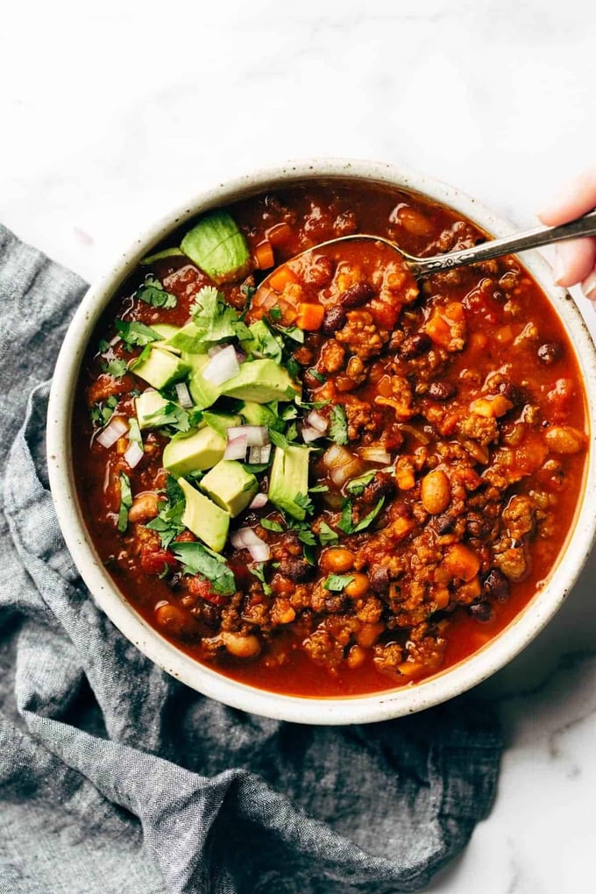

Chili

Ian's Wrecktal Fire Chili
This barn burner of a chili recipe is sure to delight and set alight a fire
down below. Packed full of capsacin, it will float the boat of any chili
head while capsizing all those to weak for these treacherous waters
Ingredients
- 3 tbs Ancho Chili Powder
- 2 Tbs Cayenne Pepper
- 1/2 cup minced Jalapeno
- 2 cans chili beans
- 1 can crushed Tomatoes
- 2 qts beef stock
- 1 yellow onion, chopped
- 4 Tbs Cumin Powder
- 3 tbs Chili Powder
- 1lb Rare Smoked Tri Tip Roast, cubed
- 1/2 cup Roasted Habaneros
Steps
- Heat cast Iron pot on med high. Add 2tbs rendered beef fat.
- Add onion and saute, stirring occasionally until translucent.
- Add Tri-Tip and Jalapenos, stir gently, then let sit covered for 2 minutes
- deglaze pan with tomatoes and add all spices, return to boil
- Add beef stock and cover, reduce heat to low and let cook, stirring occasionally
for 45min
- Add beans and Habeneros, cook 10 minutes
- Remove from heat, let stand 5 min and enjoy with your choice of toppings